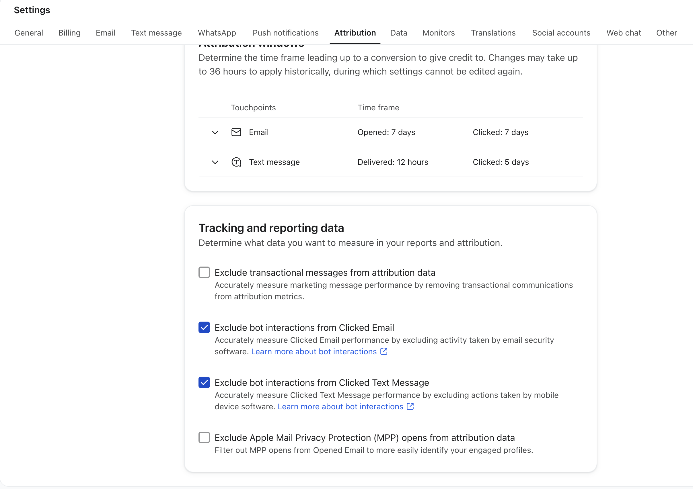
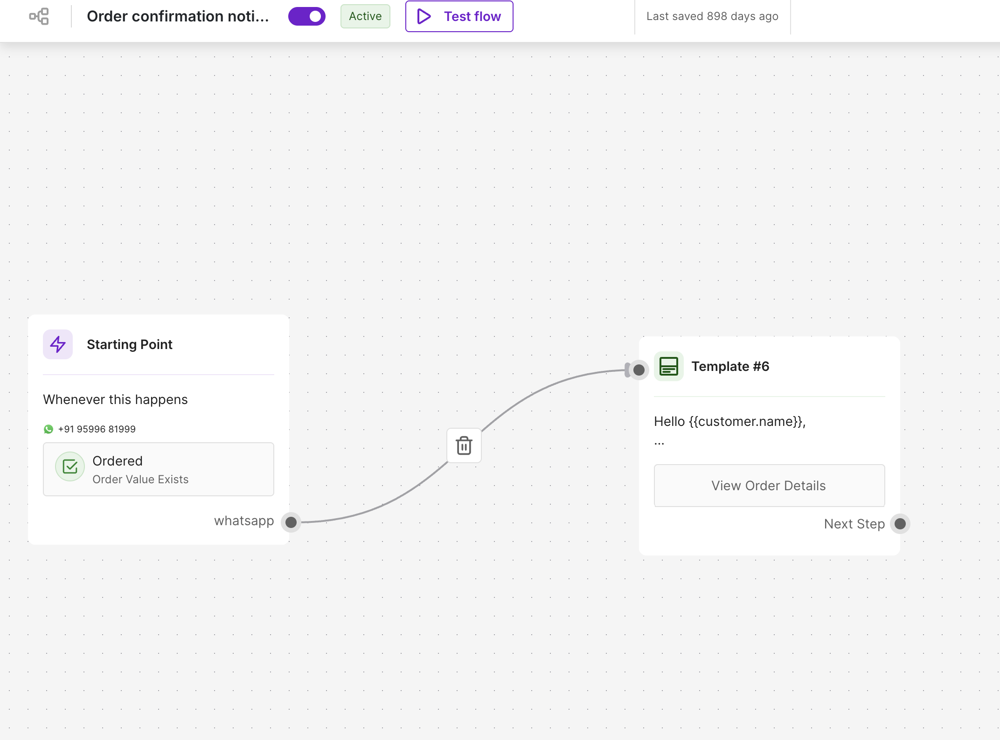
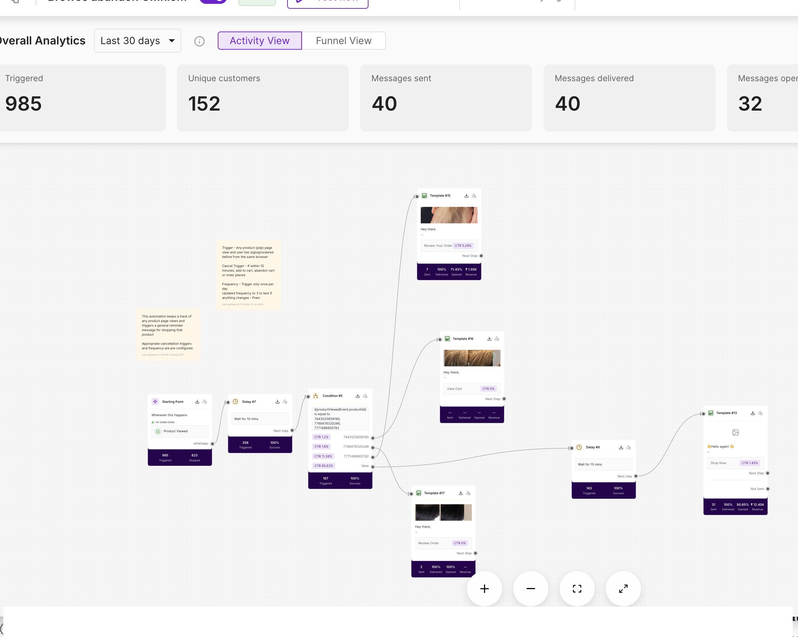
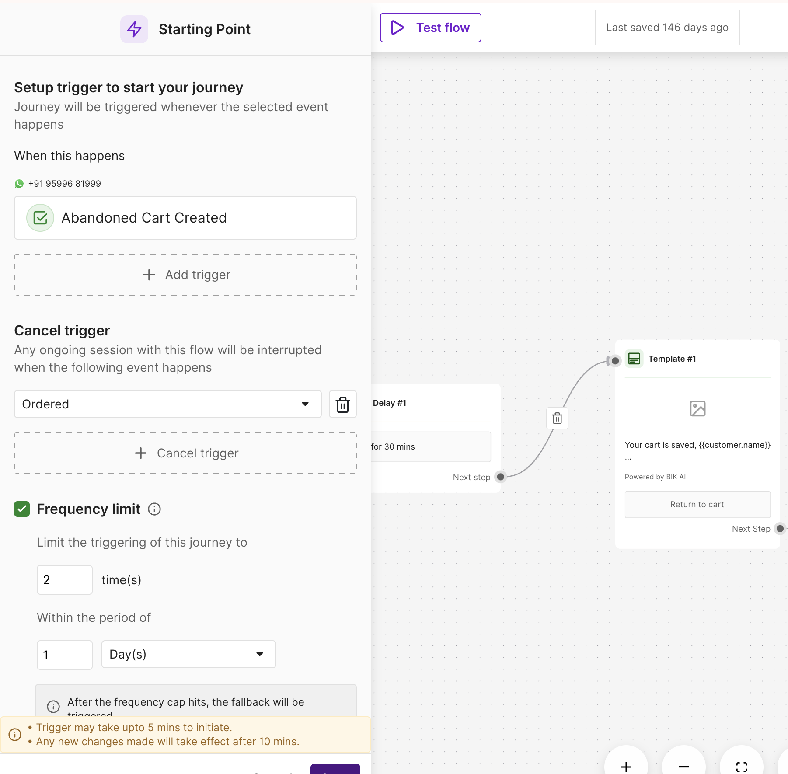
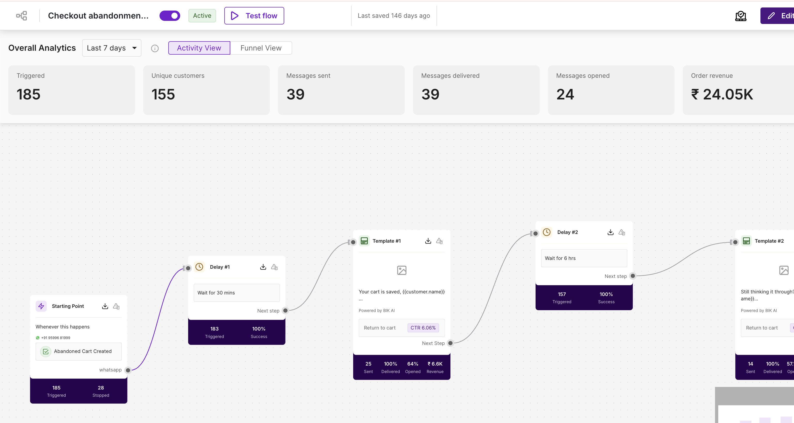
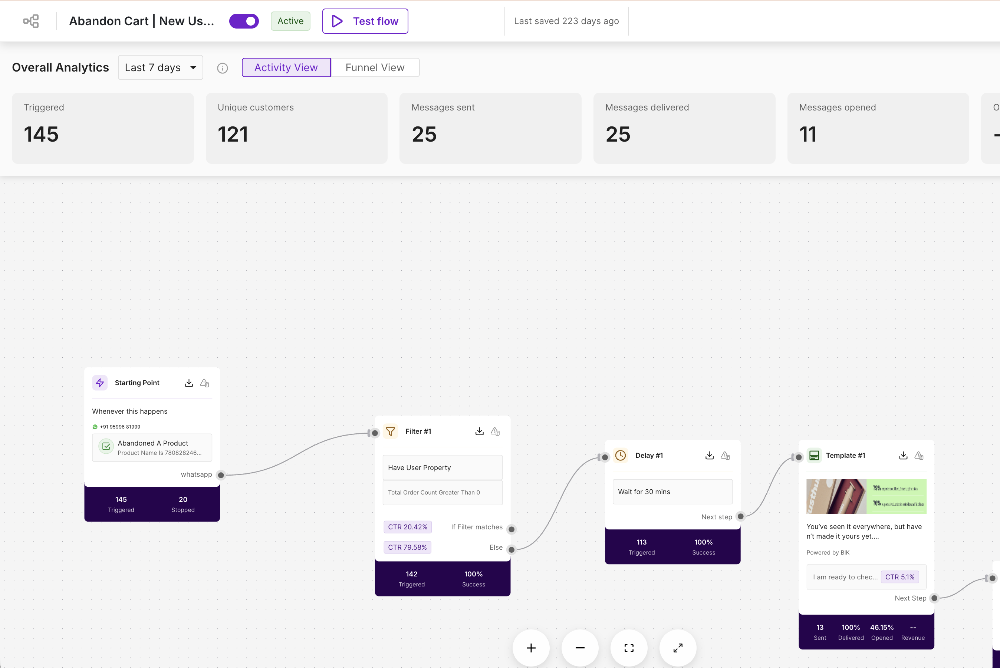
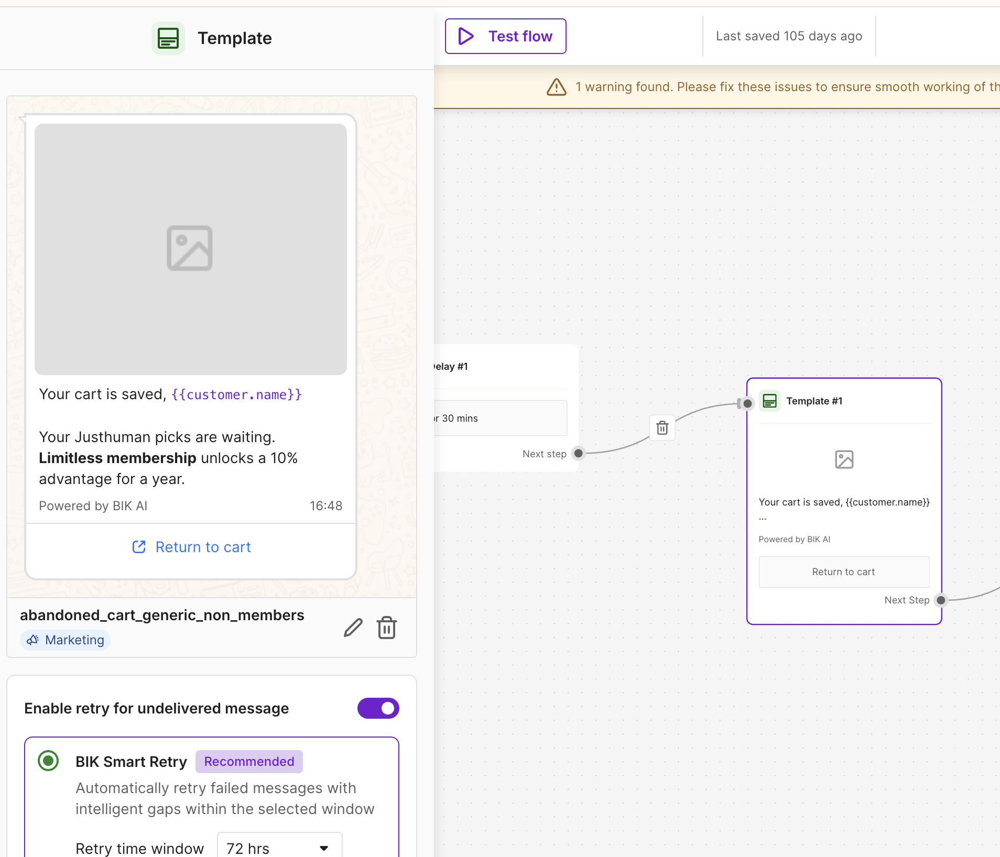
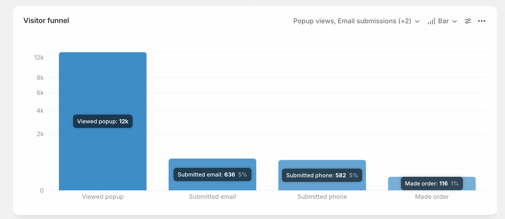

Executive summary
The state of retention, and the handful of things that move it. Internal audit — Klaviyo API (live) · Bik exports · Shopify orders (full history) · Alia analytics. Every figure cross-checked against a second source.
JustHuman's retention is genuinely strong and improving. In June 2026 retention drove 20.0% of Shopify revenue (up from 16% in January), split roughly 58% WhatsApp / 42% email. Repeat behaviour is climbing cohort-over-cohort. The basics exist. The work is to fix the leaks and steer acquisition into the products that retain.
The seven moves that hit the targets
from the flow-by-flow walkthrough of Klaviyo, Bik and Alia. Each is proven in the Deep Analysis view.- 1. Fix the welcome engine. The offer dies in 30 minutes and no message mentions it. 7 popup steps, no skip buttons. The WhatsApp welcome fires on first order, not signup: last week 579 signed up, only 117 entered. People decide to buy in the welcome flow but cannot claim the offer.
- 2. Rebuild recovery around the bestseller. Alia signups buy Microshots, yet browse abandonment does not exist on email and on WhatsApp it targets haircare that nobody buys. Checkout has one generic email, cart has two. The signup offer must follow the person until they order.
- 3. Stop selling membership to everyone. Only 600 of 24,000 customers are members, yet every cart and checkout message pushes membership. A/B a plain product message with a dynamic code. Membership becomes a founder-led flow for 2-time buyers.
- 4. Treat the 21,000 prospects as their own audience. Half the list never bought, and prospects engage with email more than customers. Monthly founder, research and education slot with a limited-time offer.
- 5. Build the full Microshots framework. 65% of popup orders, best repeat behaviour, but no activation flow, generic replenishment, no catalogue introduction in the welcome.
- 6. Use the data we already collect. 51,406 quiz answers and the Skin Analyser results are used nowhere. Send the analyser recommendations by email, branch by answer and age. Fix the Apple privacy setting inflating opens.
- 7. Win back by skin data. Lapsed October buyers are already coming back when touched. Build day-90 and day-365 win-back speaking to the concern each person shared.
Retention summary — month on month: what we get, what we retain
Month-on-month, Jan–Jun 2026. Source: Porcellia tracker (cross-checked vs Klaviyo & Bik).
Mandatory flow coverage — email vs WhatsApp
Every essential flow a skincare brand must run: live or not on each channel, and whether it performs. H1 2026, from the Klaviyo flow list + Bik journey export.| Mandatory flow | Email (Klaviyo) | WhatsApp (Bik) | Verdict |
|---|---|---|---|
| Welcome / pop-up | ✅ ₹6.0L (#1 flow) | ⚠️ ₹2.6L · 50% capped | Live both, but generic — ignores the Alia quiz data; WA loses half its triggers to capping |
| Collection abandonment | ✕ missing | ✕ missing | Missing on both |
| Browse abandonment | ✕ missing | ⚠️ ₹18k · 80% capped | No email at all; WA barely functions (80% of triggers lost) |
| Abandoned cart | ✅ ₹7.0L | ✅ ₹2.4L · 24% loss | Strong on both — the healthiest area |
| Abandoned checkout | ✅ ₹0.7L | ✅ ₹3.5L · 39% loss | Live both; WA is a top earner (331× ROI) |
| Order confirmed | ⚠️ draft only | ✅ ₹5.3L | WA carries it (biggest WA flow); the ~90%-open email version sits unbuilt — a proven miss |
| Order shipped | ✅ ₹1.1L | ✕ missing | Email only |
| Order delivered | ✕ missing | ✕ missing | Missing on both — and delivery is the trigger that should start activation |
| Activation per SKU | ✕ missing | ✕ missing | Missing on both — the biggest gap for a skincare brand (usage → results → repeat) |
| Replenishment | ⚠️ ₹0.6L | ⚠️ ₹1.9L · 45% loss | Live but mistimed (74-day window) and leaking; Cleansing-Balm flow = ₹0 |
| Cross-sell | ✕ missing | ✕ missing | Missing on both — despite the proven Foot Facial → Microshots path (547) |
| Upsell | ✅ ₹1.0L | ✕ missing | Email membership-upsell only; no product upsell, none on WhatsApp |
| Win back | ✕ missing | ✕ missing | Missing on both — lapsed buyers get nothing |
Channel split of retention revenue
Month by month
| Month | WA campaigns | WA flows | Email campaigns | Email flows | Total retention | Shopify rev | Ret % |
|---|---|---|---|---|---|---|---|
| Jan | ₹1.88L | ₹2.70L | ₹0.79L | ₹0.73L | ₹6.10L | ₹37.6L | 16.2% |
| Feb | ₹4.75L | ₹1.71L | ₹2.13L | ₹1.24L | ₹9.83L | ₹57.1L | 17.2% |
| Mar | ₹5.82L | ₹2.09L | ₹3.07L | ₹2.53L | ₹13.5L | ₹77.0L | 17.6% |
| Apr | ₹6.66L | ₹3.84L | ₹2.95L | ₹4.25L | ₹17.7L | ₹89.4L | 19.8% |
| May | ₹6.01L | ₹4.01L | ₹4.01L | ₹4.82L | ₹18.9L | ₹98.2L | 19.2% |
| Jun | ₹3.92L | ₹4.73L | ₹4.30L | ₹3.90L | ₹16.8L | ₹84.3L | 20.0% |
- Campaigns vs flows is balanced — H1: WA campaigns ₹29.0L + flows ₹19.1L; Email campaigns ₹17.3L + flows ₹17.5L. Flows (automations) are roughly half of retention revenue on each channel — a healthy, compounding base.
- Retention % rose every quarter (16%→20%), even as Shopify revenue itself grew — retention is scaling faster than the store.
Cross-check: tracker WA-flow H1 ₹19.1L ≈ Bik journey export ₹19.6L; tracker email-flow H1 ₹17.5L ≈ Klaviyo API ₹16.8L.
First purchase vs second purchase, month on month
orders export, entire history classifies each customer; H1 2026 shown| Month | Orders | First-time | Repeat | Repeat % | Repeat revenue share |
|---|---|---|---|---|---|
| Jan | 925 | 614 | 311 | 34% | 38% |
| Feb | 884 | 578 | 306 | 35% | 36% |
| Mar | 1,335 | 864 | 471 | 35% | 39% |
| Apr | 1,598 | 1,134 | 464 | 29% | 33% |
| May | 1,647 | 1,062 | 585 | 36% | 38% |
| Jun | 1,403 | 871 | 532 | 38% | 39% |
Repeat share of orders is climbing (34%→38%) while first-time volume also grows — retention is compounding on top of acquisition, not instead of it.
Cohort-level analysis
Entire order history (36,059 orders, 2021→2026; voided excluded). Customer key = email.
Where the retention is (and isn't): first product → % who buy again
| First product | First-buyers | Buy again |
|---|---|---|
| 30-Sec Foot Facial (acquisition hero) | 10,827 | 13.0% |
| Microshots | 6,973 | 25.3% |
| Hair range | 4,733 | 26.9% |
| Peace / Face Mask | 1,696 | 26.6% |
| Body | 1,436 | 25.5% |
| Sensation Cream | 457 | 27.6% |
| Membership | 276 | 18.5% |
Cross-sell / up-sell map — what repeat buyers buy next
1st purchase → 2nd purchase, by category (4,238 repeat customers). Hover a ribbon.| Top up-sell / cross-sell paths (1st → 2nd) | Customers | Type |
|---|---|---|
| Foot Facial → Microshots | 547 | up-sell (cheap → premium) |
| Microshots → Foot Facial | 270 | cross-sell |
| Microshots → Sensation Cream | 232 | up-sell |
| Hair → Microshots | 159 | cross-sell |
| Microshots → Face Mask | 149 | cross-sell / bundle |
| Hair → Foot Facial | 137 | cross-sell |
Repeat is improving cohort-over-cohort
% placing a 2nd order within 90 days of their first| First-order month | Cohort | by 30d | by 60d | by 90d |
|---|---|---|---|---|
| 2024 (avg) | ~600/mo | ~4% | ~6% | ~8% |
| Sep 2025 | 586 | 7.2% | 13.1% | 16.7% |
| Nov 2025 | 832 | 7.9% | 12.1% | 14.3% |
| Feb 2026 | 572 | 6.3% | 13.3% | 17.5% |
| Apr 2026 | 1,129 | 6.1% | 11.0% | 13.0% |
Day-90 repeat roughly doubled from 2024 (~8%) to 2025–26 (14–17%) — retention work is visibly landing. May/Jun 2026 cohorts aren't shown mature (not yet 90 days old).
First, second and third orders, month on month
every order classified by whether it was that customer's 1st, 2nd or 3rd+ purchase. Last 12 months.| Month | 1st orders | 2nd orders | 3rd+ orders | Repeat share of orders | Repeat share of revenue |
|---|---|---|---|---|---|
| Jul 2025 | 1,047 | 158 | 125 | 21.3% | 28.8% |
| Aug | 876 | 181 | 138 | 26.7% | 30.7% |
| Sep | 586 | 214 | 139 | 37.6% | 41.3% |
| Oct | 775 | 194 | 152 | 30.9% | 34.5% |
| Nov | 832 | 249 | 242 | 37.1% | 38.5% |
| Dec | 743 | 202 | 206 | 35.4% | 40.9% |
| Jan 2026 | 608 | 155 | 162 | 34.3% | 38.1% |
| Feb | 572 | 170 | 142 | 35.3% | 36.1% |
| Mar | 858 | 242 | 235 | 35.7% | 39.0% |
| Apr | 1,129 | 266 | 203 | 29.3% | 33.0% |
| May | 1,055 | 290 | 302 | 35.9% | 38.6% |
| Jun | 862 | 274 | 267 | 38.6% | 39.7% |
Third-plus orders doubled in a year (125 to 267 a month). Second orders grew 73%. The base is compounding; the missing flows in the plan are what push repeat share from 38% of orders toward the 30% lifetime repeat target. Lifetime distribution: 1x 19,442 · 2x 2,993 · 3x 944 · 4+ 824.
Omnichannel — section of the current state
Which channels exist and how every surface delivers. H1 2026.
Channel scoreboard
| Channel | Status | H1 revenue | Verdict |
|---|---|---|---|
| WhatsApp (Bik) | ✅ live | ₹48.1L | 58% of retention; excellent delivery; theme mix + trigger-capping are the fixes |
| Email (Klaviyo) | ✅ live | ₹34.7L | 42%; disciplined segments, weak clicks (0.76%), missing retention-half flows |
| SMS | — not in use | ₹0 | If used at all, run it through Bik for key moments only. Do not onboard Klaviyo SMS — it adds cost, and WhatsApp already performs well on this audience (~33k SMS-consented overlap). |
| RCS | ✕ not used | ₹0 | No RCS retargeting; evaluate after SMS is live (same audience, richer format) |
Email — Klaviyo
36 flows (17 live, 19 draft) + campaigns. H1 2026, live API.
Flow-by-flow verdicts (from the account walkthrough)
what is wrong inside each email automation, and the fix| Automation | What we found | The fix |
|---|---|---|
| Welcome (ALIA) | Generic brand copy. No offer, no expiry, no catalogue, no bestseller. The 30-minute code is never mentioned. | Code + expiry in every message, Microshots-led, catalogue and founder introduction, branch by quiz answer, non-buyer filter and purchase exit. |
| Post-purchase | Customers are most active right after buying, and the current post-purchase emails are generic membership upsells, not specific to the product bought. | Purchase-specific activation series per product: usage, expectations, results, then the cross-sell. |
| Browse abandonment | Does not exist on email. | Build it, productised to Microshots first (1,112 viewers a week), then CB and DSC. Viewed-product segments already perform in campaigns. |
| Abandoned checkout | The most important automation has ONE generic email. | Complete rework: 3 to 4 emails, product-specific, offer-holder version with code and expiry, beginner vs repeat versions. |
| Abandoned cart | Only 2 emails, generic, membership-led. MS cart flow performs well for new users with just 2 emails. FF relaunch earns ₹0. | Add emails to the MS flow, educational product-specific content, kill or rebuild FF relaunch, remove membership push. |
| Membership messaging | Every automation pushes the 10% member line. Only 600 of 24,000 customers are members. | Remove from all automations. A/B plain product message + dynamic code. New founder-led membership flow for 2-time buyers only. |
| Replenishment | Generic. MS replenishment gets good interaction but the copy is flat. | Rework around the founder angle: because you bought this, here is the best next step. Test 2 or 3 versions. |
| Skin Analyser | Good submit rates, used nowhere. Recommendations never reach the inbox. | Mandatory results email with the recommended products. Two CTA buttons in popup and welcome to take the analysis. Use collected age for recommendations. |
| Tracking | Apple privacy opens are NOT excluded. Open rates are inflated. | Tick the MPP exclusion in Klaviyo settings; re-baseline open benchmarks after. |
Prospects engage with our emails more than customers do, yet campaigns are imagery-led product pushes. Curate prospect campaigns around the founder, the research lab and product testing: trust first, then the offer.
Top email flows (H1 2026)
recipients · conversions · revenue, from Klaviyo| Flow | Recipients | Conv. | Revenue |
|---|---|---|---|
| Welcome flow ALIA (popup-driven) | ~25.4k | 107 | ₹5.96L |
| Abandon Cart — Generic (members) | 3.2k | 38 | ₹2.43L |
| Abandon Cart — Generic (non-members) | 1.7k | 25 | ₹1.49L |
| Post-Purchase — non-members (membership upsell) | 5.4k | 22 | ₹1.01L |
| Abandoned cart — Microshots relaunch | ~1.4k | 30 | ₹1.20L |
| Replenishment — Foot Facial + Generic | 1.2k | 13 | ₹0.58L |
Total email flow revenue H1 ₹16.8L (Klaviyo) ≈ ₹17.5L (tracker). Membership model drives the members/non-members split across flows.
Drill-down · Welcome flow ALIA (entry: Alia list · 4 emails · live)
Entry trigger: added to Klaviyo list "Alia New Subscribers" (26,773). Exit: purchase / unsubscribe. 4 emails with delays. Copy from Porcellia flows-structure doc; per-email stats from Klaviyo.
Read: Email 1 does the heavy lifting (₹4.06L of ₹6.0L). Click rates are low (~1%) across all four — the sequence converts on opens/brand, not clicks; worth testing stronger single-CTA emails.
Campaign pattern — what's being sent, to whom, how often
53 email campaigns Jan–Jun 2026, from the Klaviyo API- Cadence is 2.0/week (Jan 7 · Feb 13 · Mar 8 · Apr 8 · May 7 · Jun 10). For this revenue band the proven ladder is 3–4/week — headroom for ~1–2 more sends/week if variety improves (sending the same type burns lists, not frequency).
- Targeting is tight and disciplined: almost every campaign goes to "engaged_45 days" + product-intent segments (ATC Cleansing Balm L30, ATC Microshots L45, product viewers) — typically 2,000–3,000 recipients. That discipline is why delivery is 99.6% and opens run 66–78%.
- The cost of that discipline: reach. ~2.5k recipients per send from a 40k+ engaged-capable list, and click rate is just 0.76% (benchmark >1.2%) — the list is opening but not clicking. Fix is creative/CTA (hero + one CTA above the fold), not more segmentation.
- Theme mix skews product-push. Same pattern as WhatsApp: product/launch angles dominate; education, social-proof and use-case angles — which win in their own A/B tests — are under-used.
Segment performance — target more, target less
every campaign's included audiences joined to its attributed revenue (53 campaigns, Klaviyo)| Segment | Times targeted | Attributed rev | Rev / send | Call |
|---|---|---|---|---|
| Viewed Cleansing Balm in L5 | 1 | ₹90,818 | ₹90,818 | Target more |
| Viewed DSC Cream in L15 + opened | 1 | ₹87,236 | ₹87,236 | Target more |
| ATC DSC Cream in the L30 | 3 | ₹1.57L | ₹52,478 | Target more |
| ATC Cleansing Balm in the L30 | 5 | ₹2.56L | ₹51,130 | Target more |
| Viewed MS in L45 + opened in L60 | 3 | ₹1.49L | ₹49,792 | Target more |
| Engaged_30 | 7 | ₹3.39L | ₹48,469 | Keep |
| engaged_45 days (the workhorse) | 32 | ₹12.1L | ₹37,871 | Keep as base |
| Alia poll answered + no order | 4 | ₹1.40L | ₹34,900 | Target more (barely used) |
| Opened atleast once in L45 | 8 | ₹0.71L | ₹8,847 | Target less — 4× weaker than base |
A/B test learnings — what messaging actually wins
6 subject-line / CTA tests from the internal tracker| Test | Winning line | Rev (win) | Learning |
|---|---|---|---|
| Body Soother (Apr) | "Your dry skin has been patient long enough" | ₹33.0K | Problem-aware emotional tension >> educational framing (vs ₹14K) |
| Body Soother (Jun) | "One jar. Four versions of later" | ₹36.3K | Concrete product line > abstract/metaphorical (vs ₹22K) |
| User Letter (Jun) | CTA "Find the Fix" | ₹18.0K | Solution-oriented CTA > "Buy Now" (vs ₹11K) |
| Membership (May) | "This isn't for everyone" | ↑ open + click | Exclusivity framing wins for membership/insider offers |
| Melting Balm (Apr) | "That tight feeling after cleansing?" | ₹14.1K | Relatable concern > clever wordplay for revenue (vs ₹8.6K) |
| Soiree (Mar) | "You should've been in that room…" | ₹9.7K | Curiosity/exclusivity > descriptive emotional for events |
What's missing / weak
- Transactional flows sit in draft — Order Confirmed, Order Cancelled, Shipping Confirmation are not live in Klaviyo (handled on WhatsApp instead; fine, but no email fallback).
- Skin-Analyzer quiz doesn't feed a live email nurture — the flow is drafted, not live; a large engaged segment is uncaptured on email.
- The generic "Welcome flow" is ₹0 (draft) — all welcome value comes from Welcome-ALIA. Fine while Alia dominates capture, but a single point of dependence.
- Several "relaunch" variants left in draft — duplicated effort not switched on.
Evidence · screenshots from the account walkthrough
captured by Shiwani, 15 July 2026
WhatsApp — Bik
60 campaigns + journey flows, Jan–Jun 2026. (Bik API is send-only; data from exports.)
Flow-by-flow verdicts (from the Bik walkthrough)
wiring faults found inside the WhatsApp automations, and the fix| Automation | What we found | The fix |
|---|---|---|
| Post-purchase (order confirmation) | The most important flow: customers are most active right after buying. Today it is ONE generic message, unchanged in 2.5 years, paid at marketing rates, and it duplicates the order updates the shipping partner already sends. | Make every post-purchase message specific to what they bought: how to use it, what to expect, when results come. This is the front door of the activation flow. |
| Welcome flow | Trigger is "customer created" = first order. Last week: 579 Alia signups, only 117 entered. We introduce the brand to people who already bought. Only the last message converts; the rest add spend. | Re-trigger on Alia signup. Offer-led message 1 with code and expiry. 3 messages max, non-buyers only. |
| Browse abandonment | Specialised for haircare (3 product IDs) which nobody bought in 30 days. 823 of 985 triggers stopped. The generic fallback branch converts best (85.63% CTR, ₹12.45K vs ₹1.55K). | Re-point the specialisation to Microshots and the products people actually buy from the popup. Loosen the stop conditions. |
| Abandoned checkout | Entry trigger reads "Abandoned A Product" with a hardcoded product name: recheck it is truly checkout abandonment. Only filter is order count over 0. One generic first message. | Verify the trigger, split prospect vs customer vs member, product-specific messages, offer-holder version with code and expiry. |
| Membership line to everyone | "Your 10% Limitless member advantage is already included" goes to prospects and non-members. It is not relevant to them. | Remove from non-member sends. A/B plain product + dynamic code messaging. |
| MS cart "new users" filter | Filter is "bought something (order count over 0)" which can include people who already bought Microshots. Same message hits existing MS buyers. | Exclude MS buyers from the new-user branch; give repeat buyers their own copy. |
WhatsApp works well for this brand. Rebuild it around cohort-level and interest-level messaging: who you are (prospect, customer, member) and what you showed interest in decides the message.
Flow performance (Jan–Jun 2026)
real ROI = revenue ÷ cost · trigger-loss = capped/cancelled| Flow | Triggers | Orders | Revenue | Cost | ROI | Trigger-loss |
|---|---|---|---|---|---|---|
| Order confirmation | 8,051 | 121 | ₹5.26L | ₹6,603 | 80× | 0% |
| Welcome Flow | 3,880 | 37 | ₹2.31L | ₹1,554 | 149× | 56% |
| Checkout abandonment | 4,236 | 35 | ₹2.02L | ₹608 | 331× | 30% |
| Replenishment — Microshots | 3,192 | 28 | ₹1.72L | ₹1,824 | 94× | 42% |
| Checkout Abandon — Omni | 1,014 | 22 | ₹1.44L | ₹272 | 527× | 75% |
| Post-Purchase non-members | 9,577 | 35 | ₹1.33L | ₹1,878 | 71× | 19% |
| Browse abandon — Omni | 3,176 | 5 | ₹0.18L | ₹132 | 139× | 80% |
| Abandon-cart FF-old (DEAD) | 1,005 | 0 | ₹0 | ₹23 | — | |
| Replenishment Cleansing Balm (DEAD) | 153 | 0 | ₹0 | ₹28 | — |
Drill-down · Welcome Flow (WhatsApp) — 149× ROI but 56% of triggers lost
3,880 triggers → 2,185 cancelled/capped → 1,968 messages sent → 1,331 read → 37 orders → ₹2.31L (cost ₹1,554). Per-message copy available from the flows-structure doc; live message renders need a Bik panel screenshot (domain blocked in automation).
Action: the flow converts brilliantly on the half that receive it — recovering the capped 56% is the highest-value single fix on WhatsApp.
Campaigns — top & waste (60 campaigns, H1)
| Campaign | Revenue | ROI | Opt-out |
|---|---|---|---|
| Sensation Cream | April | ₹1.23L | 39× | 0.05% |
| Membership | April | ₹1.21L | 49× | 0.00% |
| DSC | May | ₹1.20L | 44× | 0.17% |
| Microshot Users | April | ₹1.19L | 41× | 0.12% |
| Members Only | February | ₹0 | — | |
| Menopause MS | January | ₹0 | — |
60 campaigns · 99,914 messages · ₹30.4L revenue · ₹1.1L cost · 27.8× blended ROI. Winners are offer-led + tightly segmented (Membership, DSC, Microshot Users). Prune ₹0 sends.
Delivery & campaign pattern
from the Bik exports, Jan–Jun 2026- Delivery is excellent — 97–98% on both campaigns and flows with 0.10% opt-out. The WhatsApp problem is not deliverability; it is trigger-capping (flows) and theme monotony (campaigns).
- Theme economics say rebalance: Product/Launch 35 campaigns at ₹46k avg — while Restock/OOS averages ₹69k (only 7 sent), Social-proof/Event ₹68k (6), Membership ₹52k, Education ₹51k. The formats used least earn the most per send.
| Theme (H1 2026) | Campaigns | Revenue | Avg / campaign |
|---|---|---|---|
| Product / launch push | 35 | ₹16.1L | ₹45,975 |
| Restock / OOS | 7 | ₹4.8L | ₹68,893 |
| Social proof / event | 6 | ₹4.1L | ₹67,640 |
| Membership | 6 | ₹3.1L | ₹52,343 |
| Education / use-case | 4 | ₹2.0L | ₹50,558 |
| NPS / review | 2 | ₹0.3L | ₹14,746 |
Evidence · screenshots from the account walkthrough
captured by Shiwani, 15 July 2026





Alia — the most important funnel
The capture layer. Measured end-to-end from Klaviyo events (Alia has no data API).
The Alia funnel
| Stage | Count | Conversion |
|---|---|---|
| Poll answered (skin-type / self-care quiz) | 51,406 | — |
| Reward claimed (offer) | 15,157 | 29.5% |
| Subscribed (Alia New Subscribers list) | 26,773 | cumulative |
| → Welcome-ALIA email flow | ₹6.0L | #1 email flow |
Polls grew Jan 6,749 → May 10,731 → Jun 9,422 — capture is scaling. The quiz ("how would you describe your skin type", "what matters most in self-care") doubles as a zero-party data collector.
Full popup funnel
from the internal tracker (p18) — views → sign-up → 30-day conversion| Stage | Recent monthly range (H1 2026) |
|---|---|
| Popup views | ~35k–57k / month |
| Email sign-ups | 2,224 → 3,520 / month (rate ~4.3–7.6%) |
| SMS sign-ups | 2,026 → 3,225 / month |
| Orders within 30 days of signing up | 361 → 644 / month |
| Sales within 30 days | ₹20.6L → ₹33.6L / month |
| CVR attributed | ~13–21% (via Alia discount code) |
Sign-up rate has softened from ~19% (Apr 2025) to ~4–7% recently — worth investigating (popup fatigue / traffic mix). Absolute captures are up because traffic grew.
The quiz answers predict buyers — segment the welcome flow by them
poll response → order conversion (Nov 2025 shown; pattern holds across H1 2026)| "What matters most in self-care?" | Responses | CVR |
|---|---|---|
| Key Ingredients | 259 | 30.9% |
| Clean Beauty | 367 | 25.3% |
| Faster Results | 501 | 24.9% |
| Dermat Recommendations | 343 | 21.0% |
| Simplified Routine (highest volume) | 273 | 9.9% |
The funnel fixes, in priority order
this is the most important funnel in the account — signup rate first, then the messaging behind it- 1 · Sign-up rate (the multiplier). 7 steps, no skip anywhere, mandatory age, email before phone — and the rate fell 19.3% → 4.33% while views grew to ~57–71k/month. Rebuild: gift → phone/WhatsApp first → email (skippable) → one high-signal question (skippable) → reveal code with expiry. At ~60k views, recovering to ~8% ≈ 5,700 signups/month vs ~3,000 — feeding the best-converting cohort in the account.
- 2 · Automation messaging (bestseller-led). Alia's own attribution: Microshots = ~65% of popup-signup orders (1,776). The welcome must sell the bestseller explicitly — product story, clinical proof, reviews — not generic brand copy. Carry the dynamic coupon + its expiry in every message (today: zero mentions across all 4 emails).
- 2b · The offer expires in 30 MINUTES — and no message ever says so. The urgency exists but is invisible; and 30 minutes is shorter than the consideration cycle of a ₹5,000-AOV product ("finished while they crawl through the page"). Two tests: (A) keep the dynamic coupon, lengthen the expiry to match the AOV's decision time; (B) keep 30 minutes but fire welcome email #1 + WhatsApp #1 the instant they sign up (non-buyers only), carrying the code + the literal expiry time — so the urgency is real and usable, not already dead.
- 3 · Collection introduction — missing entirely. No email in the welcome (or any automation) walks the signup through the collections — bestsellers, anti-aging, hair, body. Add a collection-introduction email (bestsellers-first, quiz-answer-matched) so new signups discover the catalogue beyond the one product they saw.
- 4 · Branch by quiz answer. The answers predict AOV and conversion (Sensitive = highest AOV; Key-Ingredients 30.9% CVR vs Simplified-Routine 9.9%); the segments already exist in Klaviyo — the flow just doesn't use them.
Evidence · screenshots from the account walkthrough
captured by Shiwani, 15 July 2026
The plan
Everything below serves the two lifetime targets.
Part 1 · Acquisition
the Alia popup and the welcome flow, on email and WhatsApp- Extend the welcome offer window. It dies in 30 minutes today and no message mentions it. Show the expiry in the popup and in every welcome message.
- Cut popup friction. Skip buttons on age, phone and email. Fewer questions, or break the popup into 4 to 5 clean stages. Phone and WhatsApp before email. Drop age from the popup, the Skin Analyser already collects it.
- Fix the WhatsApp welcome trigger. It fires on first order today, so 579 signups became 117 entries last week. Re-trigger on the Alia signup, non-buyers only.
- Rework the welcome messages. Code and expiry in every message. Sell the bestseller Microshots first. Introduce the catalogue, the founder and the brand story. Branch by quiz answer and age.
- One monthly slot for the never-bought cohort. 21,000 prospects who engage more than customers. Founder letters, the research lab, education, a limited-time offer, new launches.
- Two CTAs for the Skin Analyser in the popup and welcome, and a results email with the recommended products.
Part 2 · Recovery
browse, cart, checkout and collection abandonment- Recheck every entry trigger on WhatsApp. The welcome trigger is wrong, the checkout trigger reads as a hardcoded product, and the product-specific triggers point at haircare that nobody buys. Verify all of them first.
- Build browse abandonment on email. It does not exist. Productise it to Microshots first, then the other proven viewed-product segments.
- Re-point WhatsApp browse abandonment from haircare to the bestsellers people actually buy from the popup.
- Rework abandoned checkout completely. One generic email today. Build 3 to 4 emails, product-specific, with separate versions for prospect, customer and member.
- Strengthen abandoned cart. More emails on the Microshots flow, educational and beginner-friendly content, fix the filter that sends the new-user message to people who already bought Microshots, kill the Foot Facial relaunch that earns zero.
- Remove the membership line from every recovery message. A/B a plain product message with a dynamic code, on email and WhatsApp.
- The signup offer follows the person through browse, cart and checkout until they place the order, with its expiry shown.
Part 3 · Activation
after the order is confirmed- Product education per product. How to use it, what to expect, when results come. Microshots first, then Foot Facial and the hair range.
- Replace the generic order confirmation on WhatsApp. It is one message, unchanged in 2.5 years, and it repeats what the shipping partner already sends while we pay marketing rates for it. It becomes the purchase-specific opener of the activation flow.
- Skin Analyser results email is mandatory. The recommendations shown on the website must reach the inbox with the products attached.
- Use age and quiz answers for the product recommendations in these messages and in the campaigns calendar.
- Introduce the community and the founder right after the first order, this is where trust compounds.
Part 4 · Replenishment
- The current replenishment is generic. Rework the messaging around the founder angle: because you bought this, here is the best next step.
- Experiment before locking. Write 2 to 3 versions, test, keep the winner.
- Microshots replenishment gets good interaction and the best repeat rate, rework it first.
- Time it to the real reorder window so the reminder lands before the product runs out.
Part 5 · Cross-sell, upsell and win-back
- Cross-sell on the proven paths. Foot Facial buyers to Microshots (547 already did it), Microshots buyers to Sensation Cream and masks.
- Membership becomes a founder-led flow for 2-time buyers only. They have invested in the brand, the founder introduces the programme, then the offer. It leaves every other automation.
- Win-back at day 90 and day 365, personalised to the skin type and concern each person shared. October buyers who lapsed are already coming back when touched.
- After a year of silence, target them purely on the skincare data they gave us.